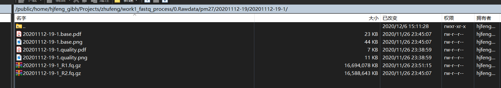
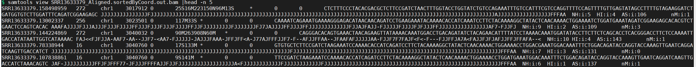
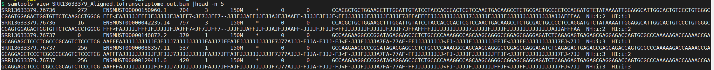

RNA-seq 分析简化版
1. 上游分析
数据简介：Expression profiling by high throughput sequencing Genome binding/occupancy profiling by high throughput sequencing

- 需要使用的软件：sratookit、star、rsem、fastqc、cutadapt、trim_galore
0. 运行目录：

- SraRunInfo.csv 文件为我们上网下载的sra注释文件
- 0.build_index 目录是构建reference index， 如果服务器有，可以问师兄们要，可以自己构建。
- 1.script_download 目录，存放了下载数据的脚本
- 2.sra_to_fastq 目录，存放了将SRA转化为fastq的脚本
- 3.fastqc 目录，存放了查看reads序列质量的脚本
- 4.trimgalore 目录，存放了质控reads序列的脚本
- 5.star_mapping 目录，存放了reads序列比对的脚本
- 6.rsem_quality 目录，存放了将比对结果定量的脚本
1. 数据下载
流程1：GEO: GSE166216(文章数据) -- GSE166204(对应RNA-seq数据) -- SRA: SRP304767 (准备下载原始数据) -- Send to -- File -- Format: RunInfo -- Create File。 最后生成一个SraRunInfo.csv的文件，并且下载。
流程2：运行1.script_download 目录下的1.create_downloadSRA_amazon.sh 或者1.create_downloadSRA_ncbi.sh 脚本。
xxxxxxxxxx61# 这个代码使用了亚马逊代理，下载速度会快一些2bash 1.create_downloadSRA_amazon.sh ../SraRunInfo.csv ../SRA3# Done! The code "download_amazon.sh" to download the SRA file has been generated !45## 或者使用NCBI的网页进行下载6bash 1.create_downloadSRA_ncbi.sh ../SraRunInfo.csv ../SRA上面两个脚本用法都一样。用法如下：
xxxxxxxxxx11bash 1.create_downloadSRA_amazon.sh [SRA表格文件路径] [下载到目标的目录]运行完之后，就会生成批量下载代码
download_amazon.sh。流程3： 运行 download_amazon.sh批量下载脚本, 进行批量数据下载。 如果想要查看对应的下载进程，可以查看对应的log文件，如wget.log。 使用
head wget.log查看是下载了什么文件，使用tail wget.log查看下载进度。xxxxxxxxxx21bash download_amazon.sh2# Downloading data, please check the corresponding log file.
2. 将SRA转化为fastq文件
流程1：运行2.sra_to_fastq 目录下的2.create_fqdump.sh。 生成批量转化sra的脚本batch_fqdump.sh。
xxxxxxxxxx31# 生成fastq-dump的批量转化sra到fastq的脚本2bash 2.create_fqdump.sh ../SRA ../fastq3# Done! The code "batch_fqdump.sh" to convert the SRA to FASTQ has been generated !用法如下：
xxxxxxxxxx11bash 2.create_fqdump.sh [存放SRA的目录] [存放fastq的目标目录]流程2： 运行batch_fqdump.sh，进行批量转化SRA。
xxxxxxxxxx21bash batch_fqdump.sh2# Converting data, please check the corresponding log file.
如何判断单端和双端数据
判断生成的序列是单端还是双端。如果出现一个文件夹同时有了两个fastq文件。比如类似R1，R2（类似1，2之分）那么我们可以判断这个数据是双端序列。如果仅有一个文件，那么就是单端序列。序列是单端还是双端会影响到4.trimgalore，5.star_mapping和6. RSEM 定量 的步骤。单端和双端的代码不太一样

双端数据重命名
脚本放在3.rename_file下。
流程1： 运行3.rename_file 目录下的3.rename_fastq.sh。 对双端数据进行重命名。
x
1bash 3.rename_fastq.sh ../../fastq 1.fastq.gz 2.fastq R1.fastq.gz R2.fastq.gz用法如下：
x
1bash 3.rename_fastq.sh [存放fastq的目录] [原始R1后缀] [原始R2后缀] [新R1后缀] [新R2后缀]3. 查看fastqc的质量报告
流程1： 运行3.fastqc 目录下的3.create_fastqc.sh。 生成批量检查fastq的脚本batch_fastqc.sh。
x
1# 生成fastqc的批量检查fastq的脚本2bash 3.create_fastqc.sh ../fastq ../fastqc用法如下：
x
1bash 3.create_fastqc.sh [存放fastq的目录] [存放fastqc结果的目标目录]流程2：运行batch_fastqc.sh，进行批量检查fastq。
xxxxxxxxxx21bash batch_fastqc.sh2# Checking data, please check the corresponding log file.
4. 利用trim_galore对fastq文件进行质控
4.1. 单端数据
流程1：运行4.trimgalore目录下的4.create_trimgalore_single.sh。 生成批量质控fastq的脚本batch_trimgalore_single.sh。
4.create_trimgalore_single.sh 这个仅适用于单端的fastq
xxxxxxxxxx21# 生成批量质控fastq的脚本2bash 4.create_trimgalore_single.sh ../fastq ../trim_fastq用法如下：
xxxxxxxxxx11bash 4.create_trimgalore_single.sh [存放fastq的目录] [存放裁剪后fastq的目标目录]流程2：运行batch_trimgalore_single.sh，进行fastq的数据裁剪
xxxxxxxxxx11bash batch_trimgalore_single.sh
4.2. 双端数据
流程1：运行4.trimgalore目录下的4.create_trimgalore_double.sh。 生成批量质控fastq的脚本batch_trimgalore_double.sh。
4.create_trimgalore_double.sh 这个仅适用于双端的fastq
xxxxxxxxxx21# 生成批量质控fastq的脚本2bash 4.create_trimgalore_double.sh ../fastq ../trim_fastq用法如下：
xxxxxxxxxx11bash 4.create_trimgalore_double.sh [存放fastq的目录] [存放裁剪后fastq的目标目录]流程2：运行batch_trimgalore_double.sh，进行fastq的数据裁剪
xxxxxxxxxx11bash batch_trimgalore_double.sh
5. 利用star进行序列比对
构建比对基因组。首先下载对应物种的基因序列， 如果只是人和小鼠，可以下载https://www.gencodegenes.org/的人和小鼠的序列文件fa和基因注释文件gtf。注意不要下载最新的注释文件，最新的文件问题。
人的序列：Gencode -- Human -- FTP site -- 选择一个版本，我用是的release_35 -- 下载GRCh38.p13.genome.fa.gz -- 下载gencode.v35.annotation.gtf.gz。下载到同一个目录然后解压
xxxxxxxxxx51mkdir -p genome/gencode/human2wget -c https://ftp.ebi.ac.uk/pub/databases/gencode/Gencode_human/release_35/GRCh38.p13.genome.fa.gz3wget -c https://ftp.ebi.ac.uk/pub/databases/gencode/Gencode_human/release_35/gencode.v35.annotation.gtf.gz4gzip -d GRCh38.p13.genome.fa.gz5gzip -d gencode.v35.annotation.gtf.gz鼠的序列：Gencode -- Mouse -- FTP site -- 选择一个版本，我用是的release_M21的注释信息gencode.vM21.annotation.gtf.gz -- 去UCSC下载mm10基因组mm10.fa.gz。到同一个目录然后解压
xxxxxxxxxx51mkdir -p ./genome/gencode/mouse2wget -c https://hgdownload.soe.ucsc.edu/goldenPath/mm10/bigZips/mm10.fa.gz3wget -c https://ftp.ebi.ac.uk/pub/databases/gencode/Gencode_mouse/release_M21/gencode.vM21.annotation.gtf.gz4gzip -d mm10.fa.gz5gzip -d gencode.vM21.annotation.gtf.gz流程1：利用star构建基因组的index。在0.build_index目录下运行star_builindex.sh脚本。如果服务器有了，那么就不用重新建立，问师兄他们要，当然也可以自己构建。
xxxxxxxxxx11bash star_builindex.sh ../../ref_index/mm10/star-2.7.6 ../../genome/gencode/mouse/mm10.fa ../../genome/gencode/mouse/gencode.vM21.annotation.gtf用法如下：
xxxxxxxxxx11bash star_builindex.sh [目标目录] [fa序列位置] [gtf注释信息位置]
5.1. 单端数据
流程1：当index构建完成之后，我们就要开始进行序列比对了。到运行5.star_mapping目录下运行脚本5.create_star_single.sh。生成批量比对脚本batch_star_single.sh，因为批量样本的存在，多个样本一起运行，服务器内存出现不够的现象。目前修改了一下运行方式，在面对多样本的情况下，每次只跑一次star，跑完一个样本接着跑第二个，默认用了每个比对用了5个核。
xxxxxxxxxx11bash 5.create_star_single.sh ../trimfastq ../star ../../ref_index/mm10/star-2.7.6用法如下：
xxxxxxxxxx11bash 5.create_star_single.sh [存放fastq的目录] [存放比对序列结果]流程2：运行batch_trimgalore_single.sh，进行序列比对。 修改一下运行方式，把后台运行放在外面，这样batch_star_single.sh内部不是后台运行，外部是后台运行，达到了每次只跑一次star的结果。
xxxxxxxxxx11bash batch_star_single.sh &
5.2. 双端数据
流程1：当index构建完成之后，我们就要开始进行序列比对了。到运行5.star_mapping目录下运行脚本5.create_star_double.sh。生成批量比对脚本batch_star_double.sh，因为批量样本的存在，多个样本一起运行，服务器内存出现不够的现象。目前修改了一下运行方式，在面对多样本的情况下，每次只跑一次star，跑完一个样本接着跑第二个，默认用了每个比对用了5个核。
xxxxxxxxxx11bash 5.create_star_double.sh ../trimfastq ../star ../../ref_index/mm10/star-2.7.6用法如下：
xxxxxxxxxx11bash 5.create_star_double.sh [存放fastq的目录] [存放比对序列结果] [参考基因组位置]流程2：运行batch_star_double.sh，进行序列比
1bash batch_star_double.sh &
6. RSEM 定量
当运行完比对后，会出现两个的bam文件。
一个是以"Aligned.sortedByCoord.out.bam"为后缀的BAM文件中，reads比对到的位置是基因组位置。

一个是以"Aligned.toTranscriptome.out.bam"为后缀的BAM文件中，reads比对到的位置是转录本位置。

因为我们只需要定量转录组序列信息，所以我们要用Aligned.toTranscriptome.out.bam进行定量。
构建定量参考基因组。在第五步我们已经下载好了，这里不在赘述注意不要下载最新的注释文件，最新的文件问题。
构建rsem定量参考基因组。在。在0.build_index目录下运行rsem_buildindex.sh脚本。如果服务器有了，那么就不用重新建立，问师兄他们要，当然也可以自己构建。
xxxxxxxxxx11bash rsem_buildindex.sh ../../ref_index/mm10/rsem-1.2.7/mm10 ../../genome/gencode/mouse/mm10.fa ../../genome/gencode/mouse/gencode.vM21.annotation.gtf用法如下：
xxxxxxxxxx1bash rsem_buildindex.sh [参考基因组位置]/前缀 [fa序列位置] [gtf注释信息位置]
6.1.单端数据
流程1： 当有了rsem的index之后，我们可以进行转录组的定量。到运行6.create_rsem.sh目录下运行脚本6.create_rsem_single.sh。生成批量比对脚本batch_rsem_single.sh。
x
1bash 6.create_rsem_single.sh ../../ref_index/mm10/rsem-1.2.7/mm10 ../star ../rsem_result Aligned.toTranscriptome.out.bam用法如下：
xxxxxxxxxx11bash 6.create_rsem_single.sh [参考基因组位置]/前缀 [star比对结果目录] [存放rsem定量结果] [bam文件后缀名]流程2：运行batch_rsem_single.sh，进行比对结果定量。。 修改一下运行方式，把后台运行放在外面，这样batch_rsem_single.sh内部不是后台运行，外部是后台运行，达到了每次只跑一次rsem的结果。
x
1bash batch_rsem_single.sh &
6.2. 双端数据
流程1： 当有了rsem的index之后，我们可以进行转录组的定量。到运行6.create_rsem.sh目录下运行脚本6.create_rsem_double.sh。生成批量比对脚本batch_rsem_double.sh。
xxxxxxxxxx11bash 6.create_rsem_double.sh ../../ref_index/mm10/rsem-1.2.7/mm10 ../star ../rsem_result Aligned.toTranscriptome.out.bam用法如下：
xxxxxxxxxx11bash 6.create_rsem_double.sh [参考基因组位置]/前缀 [star比对结果目录] [存放rsem定量结果] [bam文件后缀名]流程2：运行batch_rsem_double.sh，进行比对结果定量。。 修改一下运行方式，把后台运行放在外面，这样batch_rsem_double.sh内部不是后台运行，外部是后台运行，达到了每次只跑一次rsem的结果。
xxxxxxxxxx11bash batch_rsem_double.sh &